游泳抽筋原因入解救法图释
一．肌肉抽筋的原因
抽筋又称痉挛。当肌肉受到神经组织的刺激导致引起肌肉收缩或血管受到刺激而逐渐关闭，致使血液循环不良，血管收缩影响局部肌肉的物质与气体的交换，而引起肌肉痉挛现象。这种情况进场在赛跑或游泳时发生。当很强烈的导热作用在皮肤中发散时，一方面因皮肤受到刺激，致反射性的引起中枢神经系统过于兴奋，甚至失常，因而使交感神经兴奋亢进，血管收缩；另一方面还能直接引起皮下血管收缩。血管收缩时，会影响肌肉中物质和气体的交换，而使代谢产物在已经疲劳的肌肉里堆积下来，改变了肌肉的内部环境，提高肌肉的兴奋性，以至引起痉挛。
发生抽筋的部位，原有功能失去，并且非常疼痛，常造成游泳者紧张、恐惧从而导致溺水发生。
产生抽筋的原因主要有以下几种：
（一）经过长时间的运动而引起肌肉疲劳，没有休息而继续运动；
（二）突然增加运动的负荷强度、改变运动的方式而引起肌肉急剧收缩；
（三）运动姿势不正确；
（四）水温太低时；
（五）准备运动不足时；
（六）情绪过于紧张时；
二．肌肉抽筋常发生部位
肌肉痉挛常发生的部位以小腿的腓肠肌和比目鱼肌为最多，其次为足趾、手指、大腿、上臂、腹部等。
三．肌肉抽筋的持续时间
一般而言，肌肉痉挛抽筋的时间，在1分钟以内占5%，5分钟以上占39%，5分钟以上者则不多见。在发作后经快速的处理，如拉长挛缩的肌肉与按摩等其持续时间可缩短。
四．肌肉抽筋的季节
肌肉痉挛抽筋的季节以夏季为最多；其次为春季、冬季、秋季。春夏两季是比赛季节的初期，且运动时间长，因此其比例较高。
五．肌肉抽筋的时刻
肌痉挛的发生时刻与运动的时刻有密切关系，通常是以下午为多，子睡眠中发生率亦高；可见，剧烈的身体活动，不一定是发生肌痉挛的唯一原因。
六．抽筋的处理方法
（一）手指抽筋
先用力握拳，然后迅速用力张开，并向后压；如此反动作，至复原为止。
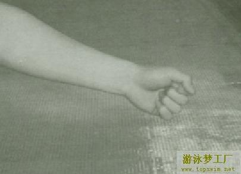
（二）手掌抽筋
两掌相合手指交叉，反转掌心向外，用力伸张。或是用另一手贴置于抽筋的手掌上，用力压，或是握住四指用力后弯，直至复原为止。
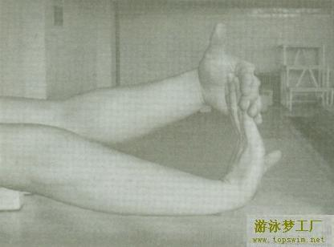
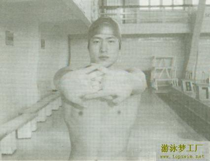
（三）上臂抽筋
握拳并尽量屈肘，使前臂贴紧上臂，然后用力伸直、并按摩抽筋部位；如此反复动作直至复原为止。
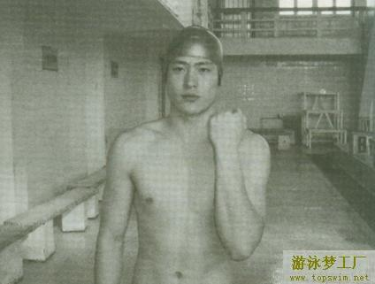
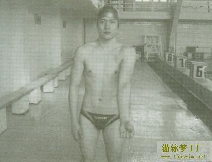
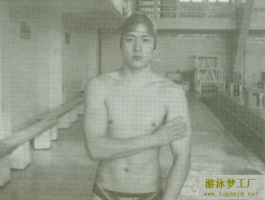
（四）足趾抽筋
将抽筋的足趾抵于另外一脚的足后跟，并用足后跟尽量压迫足趾；或是用手握住足趾，用力向抽筋部位的反方向拉。如此虽可暂时复原，但往往会再发生抽筋的现象；如要完全解脱，就必须用拇指压住屈趾肌的肌腹，并用力揉掐。
遇到腿、足任何部位抽筋时，应以水母漂姿势自解或按摩，直至复原为止。
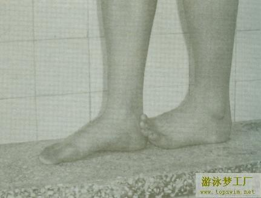
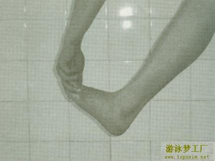
（五）小腿抽筋
小腿抽筋大部分发生在腓肠肌部位。
先呈水母漂姿势，一手握住足趾，另一只手顶住膝关节，用力拉足趾，使腓肠肌尽量伸直，然后用力揉掐其肌腹
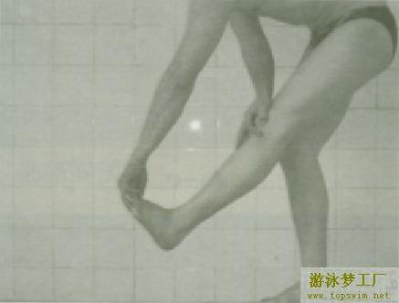
（六）大腿抽筋
1.股四头肌抽筋：
先成水母漂姿势，然后屈膝抓住足背处后拉，并向臀部压，使足跟及足底尽量靠近臀部，并使抽筋的肌肉尽量伸直再轻轻地按摩，使僵硬的部位变软复原为止。
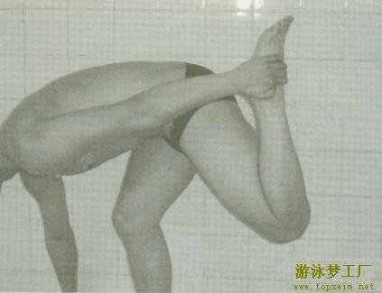
2.股二头肌抽筋：
先成水母漂浮姿势，然后一手抓住踝关节，另一手压住膝关节，尽量向脸部位靠拢，并在抽筋部位用力揉掐。大腿抽筋后，短时间内很容易再抽筋，应稍事休息才能下水游泳。下水以前，须先按摩该部肌肉，这样一方面使肌肉运动，防止再抽筋同时可以试试是否还会抽筋。若仍抽筋，则应停止游泳。
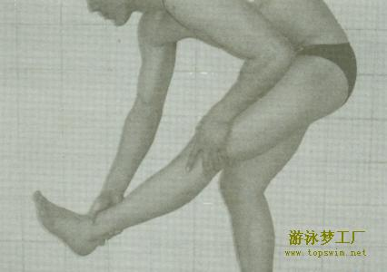
（七）胃部抽筋
胃部抽筋是所有抽筋中最严重的在此情况下，如果无人前往救助，游泳者生还希望非常小。
胃部抽筋，大部分是因饭后立即游泳所引起。突然的抽筋加上剧痛，游泳者会身不由己地双膝屈至胸口，头部下弯，呼吸困难，无法控制自身动作。在这种情况下，遇险者是难以自救的，必须利用头露出水面的机会大声呼救，依靠他人拖至安全地带。如果无人救助时，溺水者应尽量保持镇定，用双手划水，使身体上浮，设法游向岸边。
七．抽筋的预防
预防抽筋，应注意以下几点：
（一）身体不适或疲劳时，不宜下水游泳
（二）水温过低时，不宜下水游泳
（三）下水前要做准备活动
（四）饭前、饭后或剧烈运动后，不宜即刻下水。
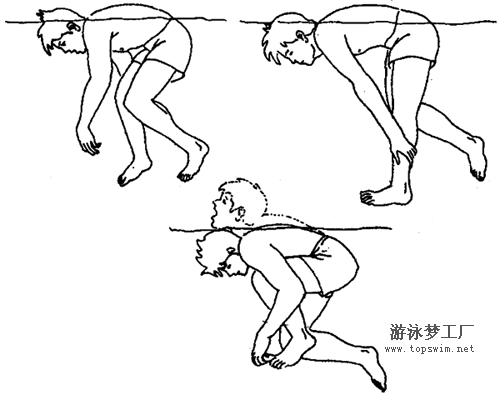